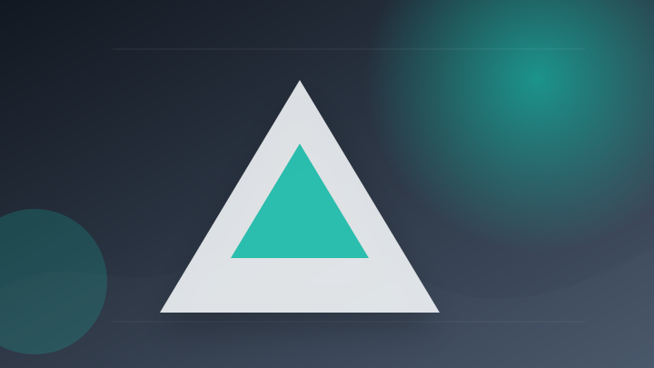
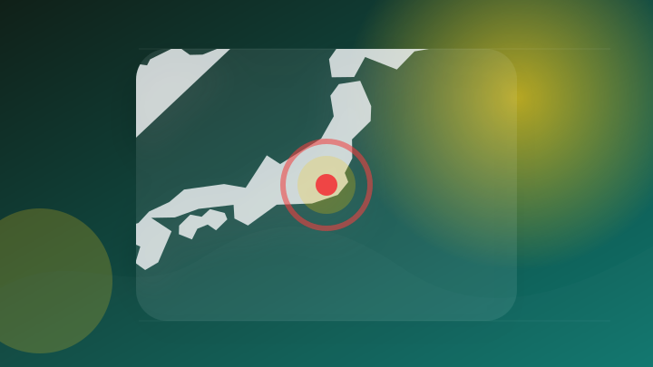
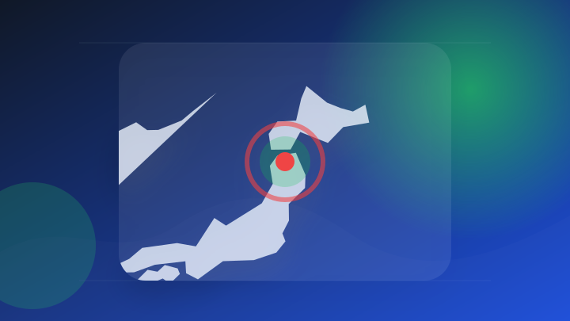
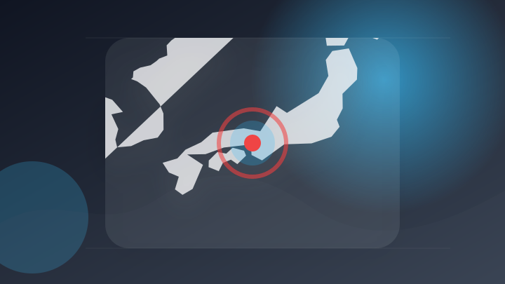

AI
6 topics
AI 専門メディア 報道確認 仕事で使える
Claude、一部チャットがGoogle検索で“丸見え”に 過去には「ChatGPT」でも 漏えいの原因は？
注目ポイント注目度 64点
AI 配信記事 速報・続報待ち 仕事で使える
生成AIの資本収益率は25～50%に達する可能性、モルガン・スタンレーが試算 推論時代の計算資源投資に強力な裏付け
注目ポイント注目度 61点
AI 配信記事 速報・続報待ち 仕事で使える
OpenAI新機能「ChatGPT Work」、もう使ってる？ そもそも何ができるの？
注目ポイント注目度 61点

AI 配信記事 速報・続報待ち 仕事で使える
営業下手でも高単価案件を跳ね上げる「リアル人脈獲得術」と、Claudeを組織化する「最新AIデザイン超効率化計画」
注目ポイント注目度 61点
AI 配信記事 速報・続報待ち 仕事で使える
生成AIを「制作ツール」から「企業の基盤」へ。アドビ「Firefly」のエンタープライズ戦略
注目ポイント注目度 61点
AI 配信記事 速報・続報待ち 仕事で使える
中小企業の生成AI利用率、2年で55%→96%に急上昇
注目ポイント注目度 61点
IT業界
5 topics
IT業界 配信記事 速報・続報待ち 仕事で使える
Microsoft、Mistralと戦略提携を拡大 欧州AI基盤を強化し規制産業向けAI展開を加速
注目ポイント注目度 67点
IT業界 配信記事 速報・続報待ち 仕事で使える
AIがホワイトハッカーとなるか Microsoftが新セキュリティーAIを発表
注目ポイント注目度 61点
IT業界 配信記事 速報・続報待ち 仕事で使える
【注目】日清食品グループ「生成AI活用推進」、2年で「延べ受講者1万名」の教育の中身
注目ポイント注目度 61点
IT業界 配信記事 速報・続報待ち 動向確認
AMDとMicrosoft、戦略的パートナーシップ拡大（EE Times Japan）
注目ポイント注目度 61点
IT業界 配信記事 速報・続報待ち 要注意
Microsoft初のサイバーAIモデル、9割を小型で処理し防御コスト半減へ
注目ポイント注目度 61点
社会
2 topics
事件・事故
6 topics

事件・事故 大手報道 報道確認 要注意
東京 小金井 小1プール死亡事故で元学童責任者ら4人を書類送検
注目ポイント注目度 70点
事件・事故 大手報道 報道確認 動向確認
北海道稚内市の海域でナマコ密漁9人目の逮捕者 容疑者の役割などを捜査（2026年7月28日掲載）｜STV NEWS NNN
北海道稚内市の海域でナマコ密漁9人目の逮捕者 容疑者の役割などを捜査（2026年7月28日掲載）
注目ポイント注目度 70点

事件・事故 大手報道 報道確認 動向確認
女性が現金の入った手提げかばんを奪われた事件 警察が強盗の疑いで41歳の男を逮捕 捜査でかばん発見 現金は一部が無くなる 男は容疑をおおむね認める 青森県弘前市
女性が現金の入った手提げかばんを奪われた事件 警察が強盗の疑いで41歳の男を逮捕 捜査でかばん発見 現金は一部が無…
注目ポイント注目度 70点
事件・事故 配信記事 速報・続報待ち 動向確認
静岡・沼津のアパートで覚醒剤所持 合同捜査本部、容疑で男２人を再逮捕
注目ポイント注目度 67点
事件・事故 配信記事 速報・続報待ち 動向確認
【逮捕者は9人に】ナマコ密漁事件で逃走していた自称・自動車販売業の57歳男を逮捕…警察が役割を捜査_事件発覚前に5人乗りゴムボート転覆で1人死亡〈北海道稚内市〉
【逮捕者は9人に】ナマコ密漁事件で逃走していた自称・自動車販売業の57歳男を逮捕…警察が役割を捜査_事件発覚前に5…
注目ポイント注目度 67点

事件・事故 配信記事 速報・続報待ち 要注意
神戸市西区の交差点、軽ワゴン車と衝突したバイクの男性死亡 軽ワゴン車運転の男を逮捕|交通事故
神戸市西区の交差点、軽ワゴン車と衝突したバイクの男性死亡 軽ワゴン車運転の男を逮捕
注目ポイント注目度 67点